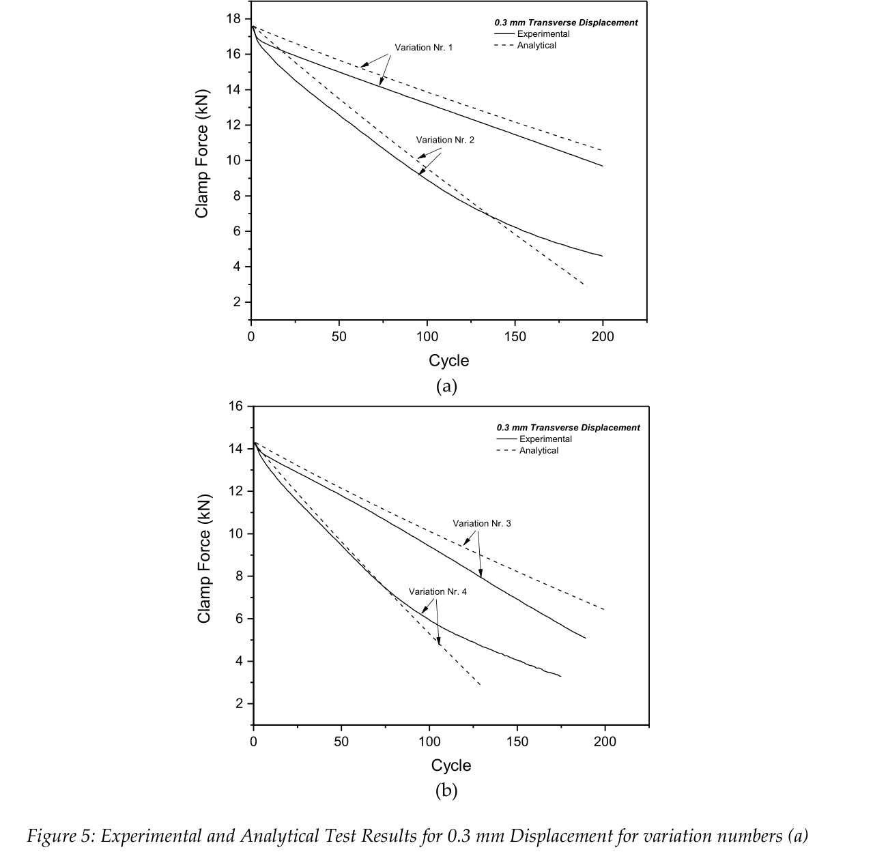
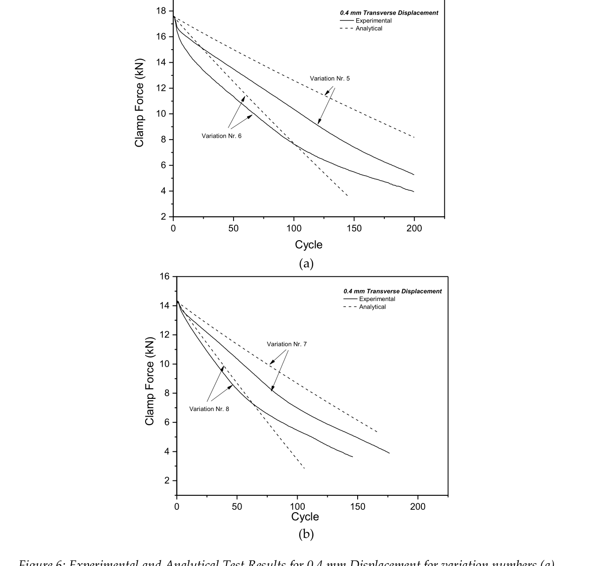

Icmez/Demir 2024 — estudo de caso— case study
M8, amplitude x pre-carga (EJR&D)M8, amplitude x preload (EJR&D)
Figura do artigoPaper figure


Figura(s) originais do artigo (recorte do PDF) — a fonte dos pontos que foram digitalizados.Original figure(s) from the paper (PDF crop) — the source of the digitized points.
Condições do ensaioTest conditions
| ReferênciaReference | Icmez, Ince & Enser (2025). EJRND 5(1):294-309 · doi:10.56038/ejrnd.v5i1.693 |
| ParafusoBolt | M8x1.25 |
| Pré-carga F0Preload F0 | 14–18 kN |
| AmplitudeAmplitude | ±0.30–0.40 mm |
| FrequênciaFrequency | 12.5 Hz |
| Família / nº de curvasFamily / curves | transverse · 8 |
| MAE medianomedian | 0.015 |
Informações do artigo — aparato, corpo-de-prova, matriz de ensaiosPaper information — apparatus, specimen, test matrix
Icmez, Ince & Enser (2025) — Analytical Prediction and Experimental Validation of Bolt Self-Loosening under Vibration
Citation: Icmez, C., Ince, U., & Enser, S. (2025). Analytical prediction and experimental validation of bolt self-loosening under vibration. *The European Journal of Research and Development*, 5(1), 294-309. DOI: 10.56038/ejrnd.v5i1.693
Affiliation: Norm Fasteners (Turkey). Open access (CC BY).
> Naming note: the curve-library working label for this source is demir2024 (kept for > consistency with the download checklist), but the actual authors are Icmez / Ince / Enser and > the publication year is 2025 (received 2025-06-02, published 2025-12-03).
Apparatus
Junker-type transverse-vibration machine, Vibration Master J160 (Fig. 4), operating on the DIN 65151 principle: a controlled cyclic transverse displacement is applied to a preloaded bolted joint while the clamp load is measured continuously (real-time clamping-force-vs-cycle curve). Excitation frequency is not stated in the paper; the J160's customary Junker rate is ~12.5 Hz — treat frequency as nominal, it does not affect F-vs-N digitization.
Supporting rig for the clamp-load-per-degree relation (model input, Fig. 3): ST-Wrench (torque-angle) combined with the vibration test device (clamp-load-vs-torque), at the same assembly rigidity as the vibration tests. Bolts tightened to target preload, then unscrewed to measure clamp-load drop per degree of rotation. 2 clamp lengths x 3 clamp loads (14.3 / 17.6 / 20.9 kN) x 3 reps = 18 tests. Fig. 3 (clamp load vs turning angle) was NOT digitized — it is a quasi-static unscrewing characteristic, not an F-vs-N loosening curve; the 20.9 kN level appears only there, not in the Junker matrix.
Specimen
- Bolt: M8 x 1.25 DIN 933 (hex head, fully threaded), nut: DIN 934
- Coating: KL100 with VH301 top coat (GZ); measured friction coefficient range 0.09-0.14
(assumed constant in their model)
- Clamp lengths: 13.8 mm and 19.8 mm
- Preloads (initial clamp loads): 14.3 kN and 17.6 kN
Trial matrix (Junker tests, Table 1 of the paper)
Full 2x2x2 factorial, 3 repetitions each = 24 tests. Curves in Figs. 5-6 appear to be one representative curve per variation.
| Var. | Displacement [mm] | Clamp load [kN] | Clamp length [mm] | Figure |
|---|---|---|---|---|
| 1 | 0.3 | 17.6 | 19.8 | 5a |
| 2 | 0.3 | 17.6 | 13.8 | 5a |
| 3 | 0.3 | 14.3 | 19.8 | 5b |
| 4 | 0.3 | 14.3 | 13.8 | 5b |
| 5 | 0.4 | 17.6 | 19.8 | 6a |
| 6 | 0.4 | 17.6 | 13.8 | 6a |
| 7 | 0.4 | 14.3 | 19.8 | 6b |
| 8 | 0.4 | 14.3 | 13.8 | 6b |
Observed ordering (paper + digitized data): loosening rate grows with amplitude (0.4 > 0.3 mm), with shorter clamp length (13.8 > 19.8 mm), and with lower preload (14.3 kN loses *fraction* of F0 faster). Reported experimental loosening rates span ~0.03-0.09 kN/cycle.
Digitized curves (digitized_csv/)
All experimental (solid-line) curves; normalized by each curve's own extracted F0. Extracted F0 matched nominal preload to <0.2% (17.58 vs 17.6 kN; 14.27-14.29 vs 14.3 kN).
| File | Var. | Pts | F0 [kN] | Cycle range | End F/F0 |
|---|---|---|---|---|---|
demir2024_amp0p3_F17p6_lk19p8.csv | 1 | 17 | 17.58 | 0-200 | 0.549 |
demir2024_amp0p3_F17p6_lk13p8.csv | 2 | 17 | 17.58 | 0-200 | 0.260 |
demir2024_amp0p3_F14p3_lk19p8.csv | 3 | 17 | 14.27 | 0-189 | 0.354 |
demir2024_amp0p3_F14p3_lk13p8.csv | 4 | 16 | 14.27 | 0-175 | 0.228 |
demir2024_amp0p4_F17p6_lk19p8.csv | 5 | 17 | 17.57 | 0-200 | 0.299 |
demir2024_amp0p4_F17p6_lk13p8.csv | 6 | 17 | 17.57 | 0-200 | 0.223 |
demir2024_amp0p4_F14p3_lk19p8.csv | 7 | 16 | 14.29 | 0-177 | 0.270 |
demir2024_amp0p4_F14p3_lk13p8.csv | 8 | 15 | 14.29 | 0-146 | 0.252 |
Digitization caveats
- Vector-path extraction, not pixel digitization. Figures 5-6 are native PDF vector plots;
the experimental curves were read directly from the PDF drawing commands (699-segment polylines + continuation chunks) with PyMuPDF, then axis-calibrated from the tick-label positions. Accuracy is limited only by axis calibration (~0.1 kN / ~1 cycle), far better than raster digitization.
- Experimental vs analytical separation is unambiguous: experimental curves are continuous
solid polylines; analytical predictions are dashed lines drawn as many independent short segments and were excluded structurally (not by eye). Where they visually overlap (early cycles of every panel, crossings near mid-life) this caused no ambiguity.
- Dense polylines were resampled onto a fixed grid (0, 2, 5, 10, 15, 20, 30, 40, 50, 65, 80,
100, 120, 140, 160, 180, 200), clipped at each curve's last cycle; 15-17 points per curve.
- Curves 3, 4, 7, 8 end before 200 cycles (test stopped, likely at low residual clamp load).
- Each curve is presumably one representative test of 3 repetitions; scatter between reps is
not published.
- Y-values are clamp force in kN in the source; CSVs store F/F0 with F0 = each curve's first
extracted point (== nominal preload to <0.2%).
V2 calibration mapping
Clean, fully controlled 2x2x2 factorial on one fastener/coating — well suited to cross-condition (leave-one-out) identification with StagedCalibrator:
- Displacement amplitude 0.3 vs 0.4 mm (disp-mode
delta_amp): pins the slip-driven
channel — k_wear_scale_tr and, if a stage-1 plateau appears at 0.3 mm, slip_onset_W. The same tuner set must reproduce both amplitudes; amplitude enters only through step_cycle(delta_amp=...), not through refitting.
- Clamp length 13.8 vs 19.8 mm: member-stiffness / load-factor lever — maps to
Phi_tr_correction (and geometry inputs L, k_tr). Longer grip → slower loosening in the data; check the model reproduces the Var 1-vs-2 (and 5-vs-6, 3-vs-4, 7-vs-8) gap from geometry alone before touching Phi_tr_correction.
- Preload 14.3 vs 17.6 kN: hold-out axis for cross-condition validation — fit at one
preload, predict the other (F0 enters the engine as initial state, no new tuner).
- Rapid initial drop (first ~5-15 cycles, 2-6% of F0): embedding —
k_emb_scale
(Stage I window n_I ≈ 10-15 cycles for these curves).
- Nearly linear-to-saturating decay afterwards with no reaperto-type collapse: surface_damage
should stay off (c_D = 0) for all 8 profiles.
- M8 x 1.25 geometry: set bolt diameter 8 mm, pitch 1.25 mm, grip per variation; friction
starter mu ≈ 0.115 (midpoint of measured 0.09-0.14).
Modelo vs dadoModel vs data
Cada card = uma curva digitalizada deste estudo: a linha é a previsão do modelo (config adotada, do store canônico) e os pontos são o dado medido; o badge traz o MAE.Each card = one digitized curve from this study: the line is the model prediction (adopted config, from the canonical store) and the dots are the measured data; the badge shows the MAE.
ReprodutibilidadeReproducibility
Cada card tem ↓ CSV (modelo + dado da curva). Os CSVs digitalizados originais ficam em Models/CALIBRATION_AND_VALIDATION/curve_library/digitized_csv/; a curva do modelo vem do store canônico (config adotada por fonte). Para reproduzir localmente:Each card has ↓ CSV (curve model + data). The original digitized CSVs live in Models/CALIBRATION_AND_VALIDATION/curve_library/digitized_csv/; the model curve comes from the canonical store (adopted per-source config). To reproduce locally:
Ver também o guia de uso do programa e a metodologia.See also the program usage guide and the methodology.